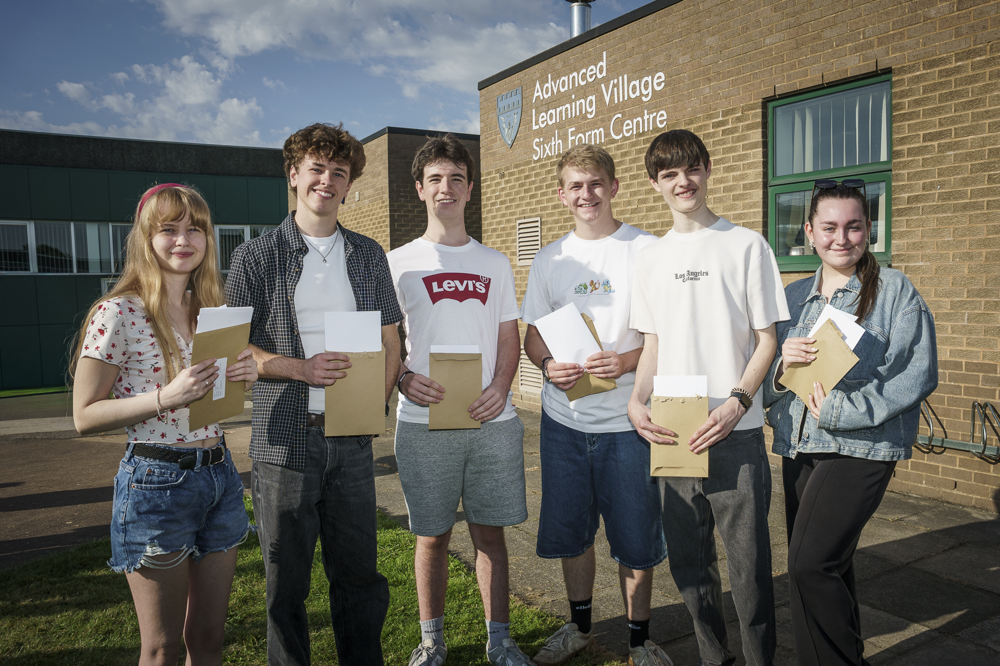
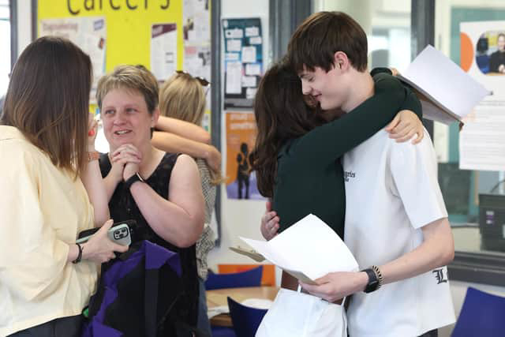
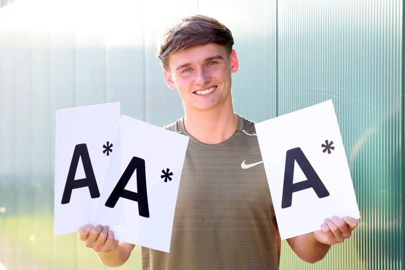

Cramlington students celebrate A-level success on results day
13TH AUG 2026
CramlingtonNews Editors

A-level students at Cramlington Learning Village have been receiving their long-awaited results this morning, with many students heading off to their first choice universities and some gaining apprenticeships from a wide range of employers.
One standout performance was by Alex Furness (pictured 1st below this article), who achieved A*s in Chemistry, Maths and Physics. He is now going to study Physics at Durham University and can see himself pursuing a future career in the research and academia field.
Alex's mother, Kerry, said, “It's amazing. He's worked so hard and it's well deserved. Exciting times ahead for him at Durham.”
Another standout performance was by Will Bruce (pictured 2nd), who also received A*s in Law, Business Studies and English Literature - and is now going to study Law at King's College in London. His interest in Law came after a taster session at school in Year 11 and now sees a future ahead in the legal profession.
Some of CLV's other former students are heading off to universities across the UK - even the University of New Mexico in the United States for one student! Others are taking up apprenticeships with leading employers and organisations including Accenture, accountants Ernst and Young, construction consultants CK21 and the Police.
CLV co-headteachers Jon Bird and Kim Irving said: “We are extremely proud of our students and the achievements they are celebrating today.”
“Today's results give us another opportunity to celebrate the hard work of our students, staff and families. We wish all of our students every success as they begin the next chapter of their lives.”
The school is also looking forward to an exciting future, with the new school building being on track for an Autumn 2027 opening, with leaders also expressing their 'delight' in the recent Ofsted inspection.
Well done to all who received their results today!
Images


Images courtesy of Steve Brock Photography and Cramlington Learning Village.